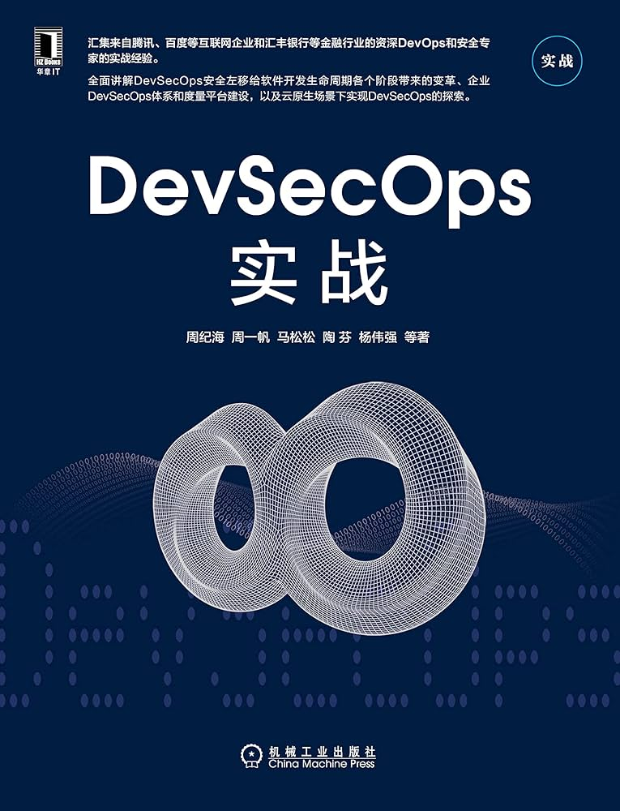

📖《DevSecOps 实战》是互联网和金融业大厂资深专家多年经验的结晶，从软件全生命周期角度系统讲解新时代软件快速交付效能与安全的融合之道。
本书以诙谐幽默的笔调，通过大量实际案例，将 DevSecOps 的理念、方法和工具娓娓道来，帮助读者理解如何在快速迭代的同时保障软件安全。
DevSecOps 理念——介绍 DevSecOps 的起源、核心思想和价值主张，解释为什么安全需要"左移"并融入整个开发生命周期。
安全左移实践——详细讲解如何在需求、设计、编码、测试、部署各个阶段融入安全实践，包括威胁建模、安全编码规范、安全测试自动化等。
工具链集成——介绍常用的安全工具及其在 CI/CD 流水线中的集成方式，如 SAST、DAST、SCA、容器安全扫描等。
组织与文化——探讨如何打破开发、安全、运维之间的壁垒，建立协作文化，推动安全责任的共同承担。
案例与实战——通过真实场景的小案例，展示 DevSecOps 落地的具体方法和常见陷阱。
诙谐并且按照实际的小 case 一点点地介绍 DevSecOps 其中的所有要点，内容丰富，联系紧密，是不可多得一本很好很系统的书。可以当参考书用。
作者没有用枯燥的理论堆砌，而是通过一个个生动的小故事和实际案例，让读者在轻松阅读中掌握核心概念。这种写作风格在技术书籍中并不多见，值得称道。
作为一本实践导向的书，它不仅告诉你"是什么"，更重要的是告诉你"怎么做"。无论你是开发人员、安全工程师还是管理者，都能从中找到有价值的参考。